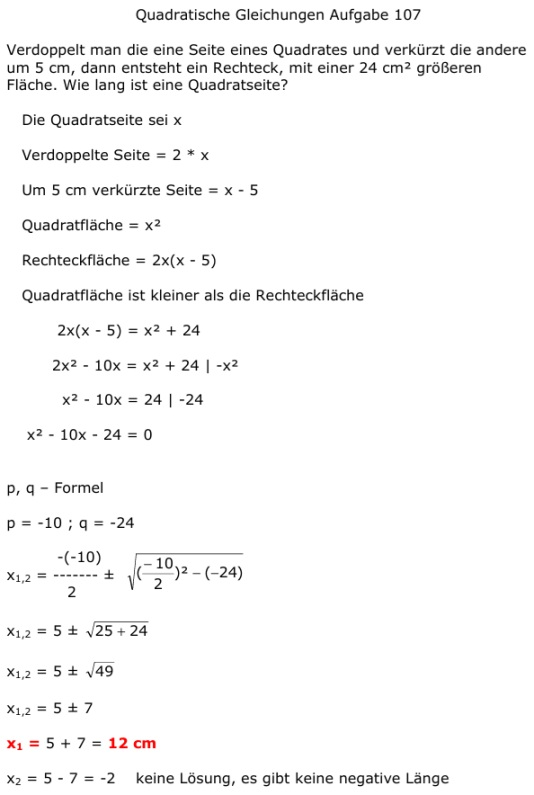

Aufgabe 107 Verdoppelt man die eine Seite eines Quadrates und verkürzt die andere um 5 cm, dann entsteht ein Rechteck, mit einer 24 cm2 größeren Fläche. Wie lang ist eine Quadratseite? Die Quadratseite sei x Verdoppelte Seite = 2 * x Um 5 cm verkürzte Seite = x - 5 Quadratfläche = x2 Rechteckfläche = 2x(x - 5) Quadratfläche ist kleiner als die Rechteckfläche 2x(x - 5) = x2 + 24 2x2 - 10x = x2 + 24 |-x2 x2 - 10x = 24 |-24 x2 - 10x - 24 = 0 p, q – Formel p = -10 ; q = -24  x1,2 = 5 ± 7 x1 5 + 7 = 12 cm x2 = 5 - 7 = -2 keine Lösung, es gibt keine negative Länge